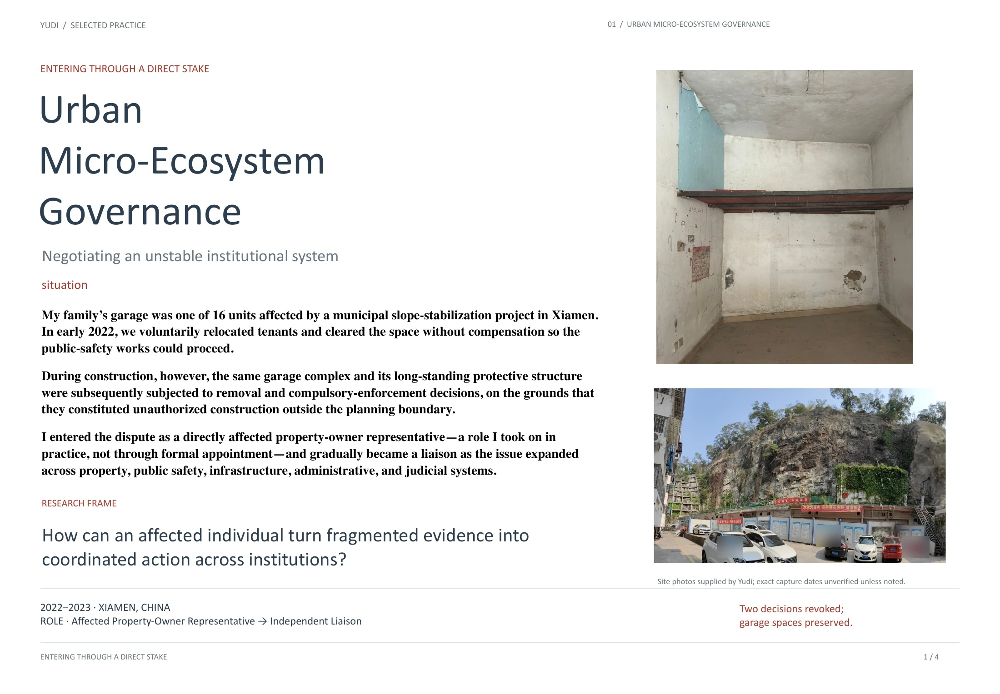
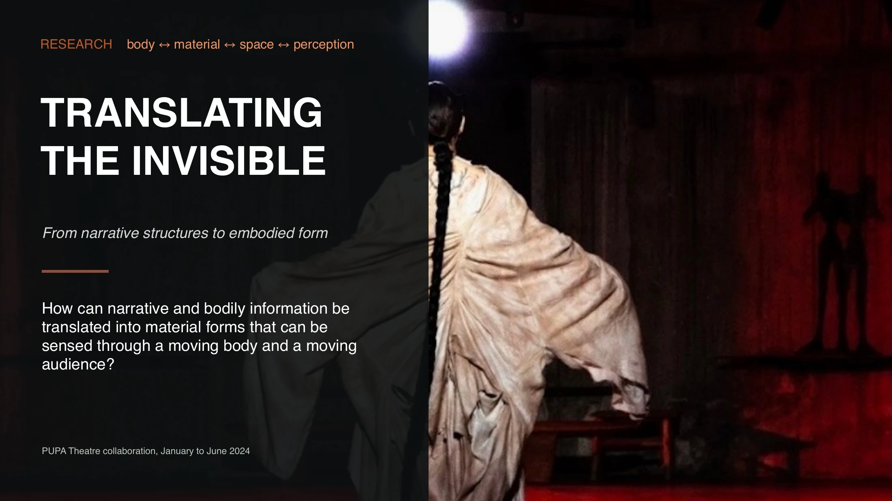
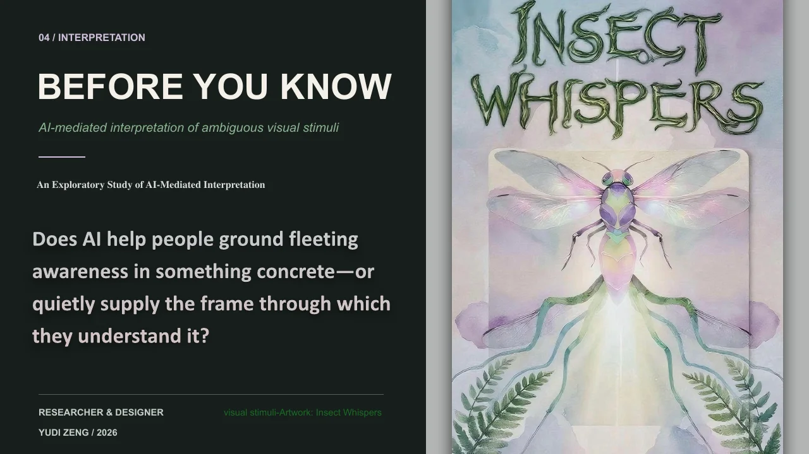

YUDI ZENG
I work where
people, places,
materials, and
meanings meet.
Across different contexts, I make, observe, coordinate, and research—following what changes when an assumption meets the reality around it.
INDEX / SELECTED PRACTICE
Selected projects
Each project begins in a different context and takes a different form. Across them, I examine how people make sense of situations and act within the conditions around them.

COORDINATIONUrban Micro-Ecosystem GovernanceProperty safety dispute · Resident coordination Civic system ↗ 02 INTERDEPENDENCEFrom Space to SystemBranding · Circular design and independent operations
Operational system ↗
03
INTERDEPENDENCEFrom Space to SystemBranding · Circular design and independent operations
Operational system ↗
03
TRANSLATIONTranslating the InvisibleCostume Design · Visual Direction Embodied practice ↗ 04
INTERPRETATIONBefore You KnowHuman–AI interaction · Exploratory studies Research dossier · 0A–0B / planned 0C ↗ABOUT
PROFILE
I typically move from vague intuitions or open problems to concrete action through iterative inquiry—gathering relevant knowledge and tools along the way and adapting them in practice.
HOW I WORK
Observe before judging. Understand a situation from the positions of those involved before forming conclusions.
Work with what is available. Start with existing resources, constraints, and relationships rather than waiting for ideal conditions.
Make complexity legible. Use visual, spatial, material, and analytical approaches to make complex ideas easier to understand and work with.
Recalibrate through feedback. Treat unexpected results and contradictions as information that can reshape the next step.